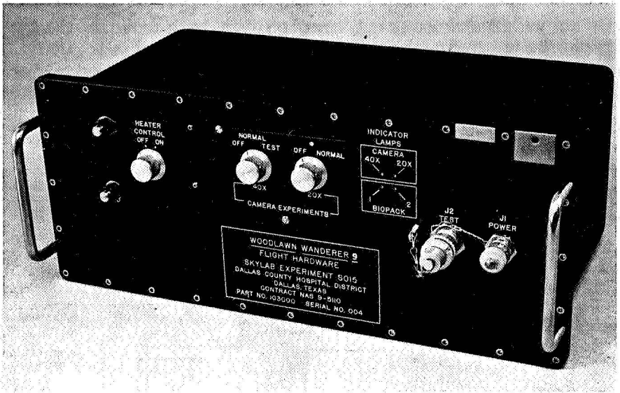

Anecdotes and ideas
I thought I'd start my blog with a long list. I typically have a few dozen ideas in progress - while I'd love to write about these topics myself, if you'd like to write on any of the topics, I'd be pleased for you to take these ideas (if you can call them that).
Woodlawn Wanderer 9
The Woodlanawn Wandered 9 - a fully analogue, completely automated mammalian cell culture system.In 1973 NASA launched Skylab 3 - a 59-day, manned, orbital mission. Aboard this spacestation was an automated cell culture system - the "Woodland Wanderer 9". Over the next 50 years no-one has cracked automated mammalian cell culture. What can we learn from their system?
The NASA Technical Report Server
If you're working on a problem in science, engineering, or medicine then NASA has already thought about it. NASA's work touches every part of STEM and fortunately for you they write about most of it on their technical report server (NTRS). No one should start a project without first checking there! And as a second shot - the Defense Technical Information Center (DTIC).
Consultancy as a model for DeepTech VC
Cambridge Consultants has spun out twenty-seven startups and four unicorns - a track record better than any UK venture capitalist or university. If CC were in the Silicon Valley, we would all know how they achieved this, I want to tell this story better and bring more information about their heyday to the startup community. David Connell’s piece “Exploding the Myths of UK Innovation Policy” is a great reference text for this.